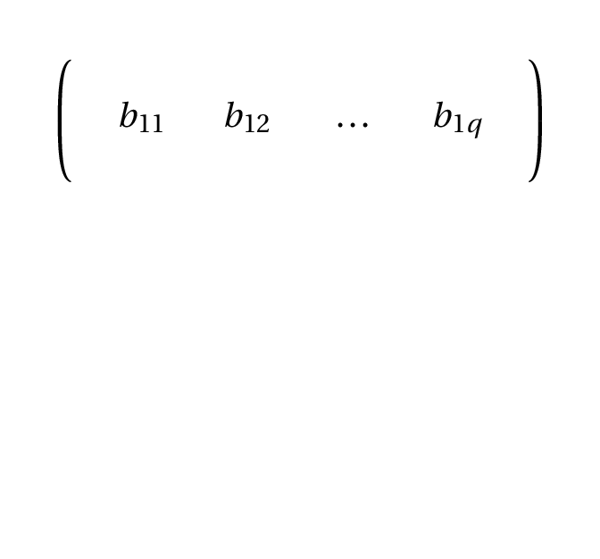
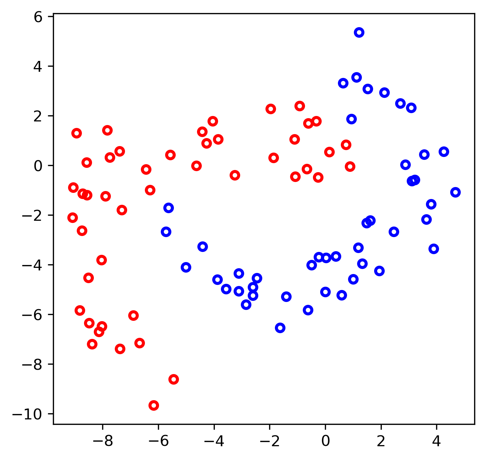
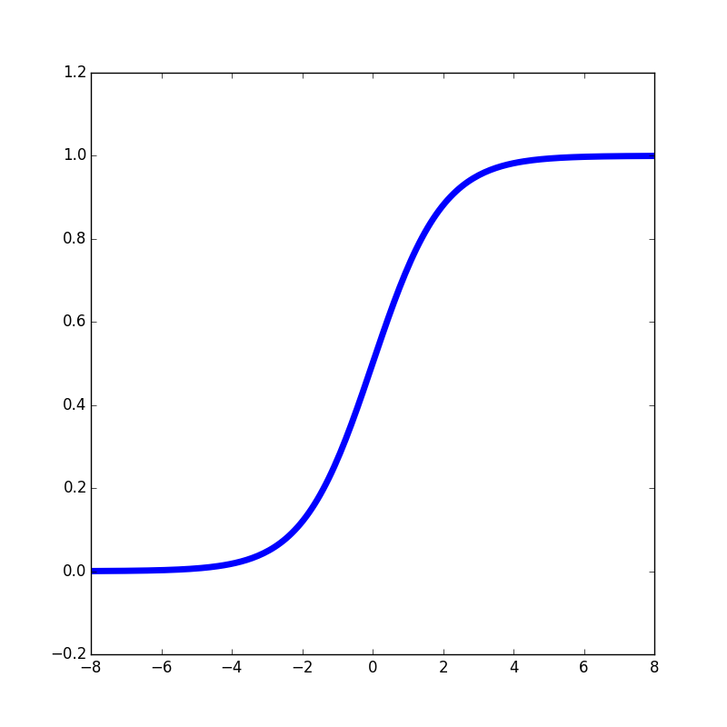

Aprendizagem Profunda
3 - Training Neural Networks
Ludwig Krippahl
Training Neural Networks
Summary
- Algebra (revisions)
- The computational graph and AutoDiff
- Training with Stochastic Gradient Descent
Training Neural Networks
Algebra
Algebra
Basic concepts:
Scalar : A numberVector : An ordered array of numbersMatrix : A 2D array of numbersTensor : A relation between sets of algebraic objects- (numbers, vectors, etc)
- For our purposes: an N-dimensional array of numbers
- We will be using tensors in our models (hence Tensorflow)
Algebra
Tensor operations
- Adition and subtraction:
- In algebra, we can add or subtract tensors with the same dimensions
- The operation is done element by element
Algebra
Tensor operations
- Matrix multiplication (2D)
- Follows algebra rules:
Algebra
Tensor operations
- Matrix multiplication (2D)
- Follows algebra rules:
Algebra
Tensor operations
- Matrix multiplication (2D)
- Follows algebra rules:
Algebra
Tensor operations
- Matrix multiplication (2D)
- Follows algebra rules:
Algebra
Tensor operations
- Matrix multiplication (2D)
- Follows algebra rules:
Algebra
Tensor operations
- Matrix multiplication (2D)
- Follows algebra rules:
Algebra
Tensor operations
- Matrix multiplication (2D)
- Follows algebra rules:
Algebra
Tensor operations
- Matrix multiplication (2D)
- Follows algebra rules:
Algebra
Tensor operations
- Matrix multiplication (2D)
- Follows algebra rules:
Algebra
- Neuron: linear combination of inputs with non-linear activation

Algebra
Tensor operations
- Tensorflow also allows broadcasting like
numpy - Element-wise operations aligned by the last dimensions

Algebra
Tensor operations
- Tensorflow also allows broadcasting like
numpy - Element-wise operations aligned by the last dimensions
tf.matmul()also works on 3D tensors, in batch- Can be used to compute the product of a batch of 2D matrices
- Example (from Tensorflow
matmuldocumentation):
In : a = tf.constant(np.arange(1, 13, dtype=np.int32), shape=[2, 2, 3])
In : b = tf.constant(np.arange(13, 25, dtype=np.int32), shape=[2, 3, 2])
In : c = tf.matmul(a, b) # or a * b
Out: <tf.Tensor: id=676487, shape=(2, 2, 2), dtype=int32, numpy=
array([[[ 94, 100],
[229, 244]],
[[508, 532],
[697, 730]]], dtype=int32)>Algebra
Why is this important?
- Our models will be based on this type of operations
- Example batches will be tensors (2D or more)
- Network layers can be matrices of weights (several neurons)
- Loss functions will operate and aggregate on activations and data
In practice mostly hidden
- When we use the
kerasAPI we don't need to worry about this - But it's important to understand how things work
- And necessary to work with basic Tensorflow operations
Training Neural Networks
Basic Example
Basic Example
- Classify these data with two weights, sigmoid activation


Basic Example
Computing activation
- Input is a matrix with data, two columns for the features, N rows
- To compute
j=12wjxj use matrix multiplication
Basic Example
Computing activation
- Input is a matrix with data, two columns for the features, N rows
- To compute
j=12wjxj use matrix multiplication - For each example with 2 features we get one weighted sum
- Then apply sigmoid function, one activation value per example
- Thus, we get activations for a batch of examples
Training Neural Networks
Training (Backpropagation)
Training
Backpropagation
- For weight
m on hidden layeri , propagate error backwards - Gradient of error w.r.t. weight of output neuron:
- Chain derivatives through the network:
- Backpropagation is a special case of
Reverse mode Automatic Differentiation
Training
Computing derivatives
- Symbolic differentiation:
- Compute the expression for the derivatives given the function.
- Difficult, especially with flow control (
if,for) - Numerical differentiation:
- Use finite steps to compute deltas and approximate derivatives.
- Computationally inefficient and prone to convergence problems.
- Automatic differentiation:
- Apply the chain rule to basic operations that compose complex functions
- product, sum, sine, cosine, etc
- Applicable in general provided we know the derivative of each basic operation
Training
- Automatic differentiation example:
Training
- Automatic differentiation example:
Training
- Automatic differentiation example:
- Tensorflow operators include gradient information
Training
Stochastic Gradient Descent
- Going back to our simple model:
Training
Stochastic Gradient Descent
- Since we can compute the derivatives, we can "slide" down the loss function
Training
Stochastic Gradient Descent
Gradient Descent because of sliding down the gradientStochastic because we are presenting a random minibatch of examples at a time
Training
Stochastic Gradient Descent
Gradient Descent because of sliding down the gradientStochastic because we are presenting a random minibatch of examples at a time
Algorithm:
- Estimate the gradient of
L(f(x,),y) givenm examples: - Update
with a learning rate
Training
SGD can be improved with momentum
- If we are rolling down the surface we could pick up speed
- Use gradients as an "acceleration", with
Training
SGD can be improved with momentum
- SGD
- SGD + 0.9 momentum
Training
Nesterov momentum
- Compute gradients where we will be after the momentum step:
- This works great for optimizing convex functions (Nesterov, 1983)
- But with stochastic gradient descent it's not as effective
- (due to random sampling)
"Unfortunately, in the stochastic gradient case, Nesterov momentum does not improve the rate of convergence."
Goodfellow et al. 2016
Training
Nesterov momentum
- SGD + 0.9 momentum
- SGD + 0.9 Nesterov m.
Training
Minibatch size
- Averaging over a set of examples gives a (slightly) better estimate of the gradient, improving convergence
- (Note that the true gradient is for the mean loss over all points)
- The main advantage of batches is in using multicore hardware (GPU, for example)
- This is also the reason for power of 2 minibatch sizes (8, 16, 32, ...)
- Smaller minibatches improve generalization because of the random error
- The best for this is a minibatch of 1, but this takes much longer to train
- In practice, minibatch size will probably be limited by RAM.
Training
- Minibatch of 10
- Minibatch of 1
- Note: the actual time is much longer for minibatch of 1
Training Neural Networks
Improving the model
Better Models
Our simple (pseudo) neuron lacks a bias
Better Models
Our simple (pseudo) neuron lacks a bias
- This means that it is stuck a (0,0)
- No bias input
- With bias input
Better Models
And one neuron cannot properly separate these set
- We need a better model:
Better Models
With two hidden layers it works better
Training Neural Networks
Other Details
Other Details
Initialization
- Weights: random values close to zero (Gaussian or uniform p.d)
- Need to break symmetry between neurons (but bias can start the same)
- Some activations (e.g. sigmoid) saturate rapidly away from zero

- (There are other, more sophisticated, methods)
Other Details
Convergence
- Since weight initialization and order of examples is random, expect different runs to converge at different epochs
Other Details
Convergence
- Standardize the inputs:
xnew=x(X)(X) - It is best to avoid different features weighing differentely
- It is also best to avoid very large or tiny values due to numerical problems
- Shifting the mean of the inputs to 0 and scaling the different dimensions also improves the loss function "landscape"
Other Details
Training schedules
- Epoch: one full pass through the training data
- Mini-batch: one batch with part of the training data
Generally needs many epochs to train
- (the greater the data set, the fewer the epochs, other things being equal)
Other Details
Shuffle the data in each epoch
- Otherwise some patterns will repeat
Other Details
Take care with the learning rate
- Too small and training takes too long
- But if it is too large convergence is poor at the end
Training Neural Networks
Summary
Training Neural Networks
Summary
- Matrix algebra
- Automatic Differentiation
- Layers and nonlinear transformations
- Training multilayer feedforward neural networks
- MLP is a special case, fully connected
Further reading:
- Goodfellow, chapters 2 (algebra), 4 (calculus) and 8 (optimization)
Aprendizagem Profunda
3 - Training Neural Networks
Ludwig Krippahl